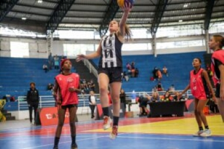
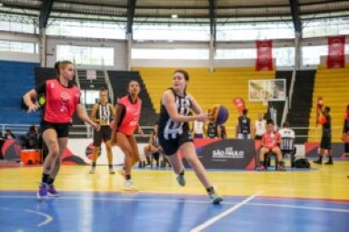
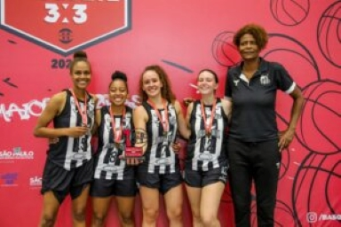
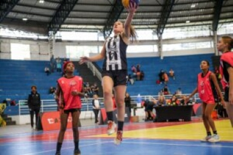
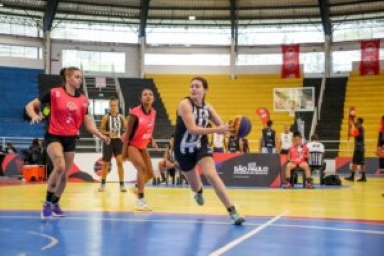
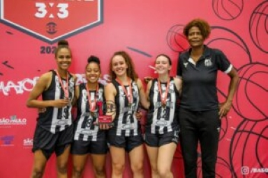

Masculino
Goleiros
34 - João Paulo, 22 - John, 52 - Diógenes, 50 - Paulo Mazoti.
Defensores
33 - Maicon, 4 - Eduardo Bauermann, 2 - Luiz Felipe, 31 - Alex, 16 -
Nathan, 27 - Auro, 13 - Madson, 3 - Felipe Jonatan, 44 - Lucas Pires.
Meio-Campistas
14 - Rodrigo Fernández, 6 - Sandry, 17 - Vinícius Balieiro, 29 - Camacho,
20 - Luan, 5 - Carabajal, 10 - Soteldo, 40 - Bruninho, 7 - Carlos Sanchéz,
21 - Lucas Barbosa, 25 - Vinícius Zanocelo.
Atacantes
9 - Marcos Leonardo, 11 - Ângelo, 30 - Lucas Braga, 15 - Angulo, 8 - Jhojan Julio, 12 - Rwan Seco.
Sereias da Vila
Goleiras
12 - Camila Gomes, 24 - Anna Bia, 1 - Vivi Holzel.
Defensoras
4 - Camila Martins, 2 - Tayla, 22 - Sassá, 19 - Isa Matos, 6 - Jajá.
Meio-Campistas
25 - Laura Valverde, 99 - Erikinha, 5 - Brena, 21 - Nicole Marussi,
14 - Ana Carla, 9 - Gi Oliveira.
Atacantes
7 - Ketlen, 11 - Cristiane, 10 - Thaisinha, 32 - Fernanda, 29 - Gadu, 8 - Jane.


 




